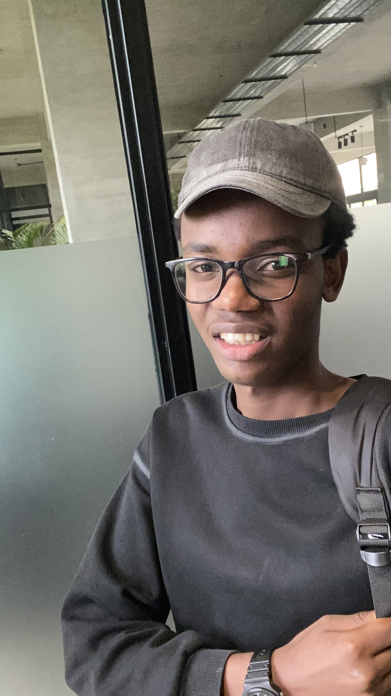

Shipping-Tracking-System Flagship · Production
Cloud-native logistics platform for parcel dispatch, freight tracking, warehouse allocation queues, and real-time fleet telemetry.
TypeScript · NestJS · Next.js · PostgreSQL · Redis · Docker · Socket.IOI’m Meek — a software engineer and network administrator interested in reliable systems, useful digital experiences, and the details that make things work.

My work sits between software engineering, infrastructure, and visual problem solving. I enjoy taking a system from its first sketch to a working product, then paying attention to how it performs in the real world.
Based in Kigali, Rwanda, I study Computer Science at the University of Rwanda while building practical products and collaborating with teams.
Cloud-native logistics platform for parcel dispatch, freight tracking, warehouse allocation queues, and real-time fleet telemetry.
TypeScript · NestJS · Next.js · PostgreSQL · Redis · Docker · Socket.IOFinancial planning and investment intelligence platform with risk evaluation, spending analysis, and asset-allocation modeling.
JavaScript · Node.js · Express · PostgreSQL · AnalyticsA privacy-first macOS teleprompter and meeting copilot designed to keep conversational context unobtrusive.
Python · PyTorch · macOS AppKit · Speech recognitionA lightweight habit system that monitors cadence, helps plan focus blocks, and records progress.
JavaScript · CSS3 · Full-stack workflow automationKigali, Nyarugenge
Eastern Rwanda, Kayonza
Freelance / Remote
University of Rwanda, College of Science and Technology · Gikondo Campus, Kigali
Nu Vision High School
Open source activity: 9 public repositories, 5 stars earned, and contributions across TypeScript, JavaScript, Python, and Java.